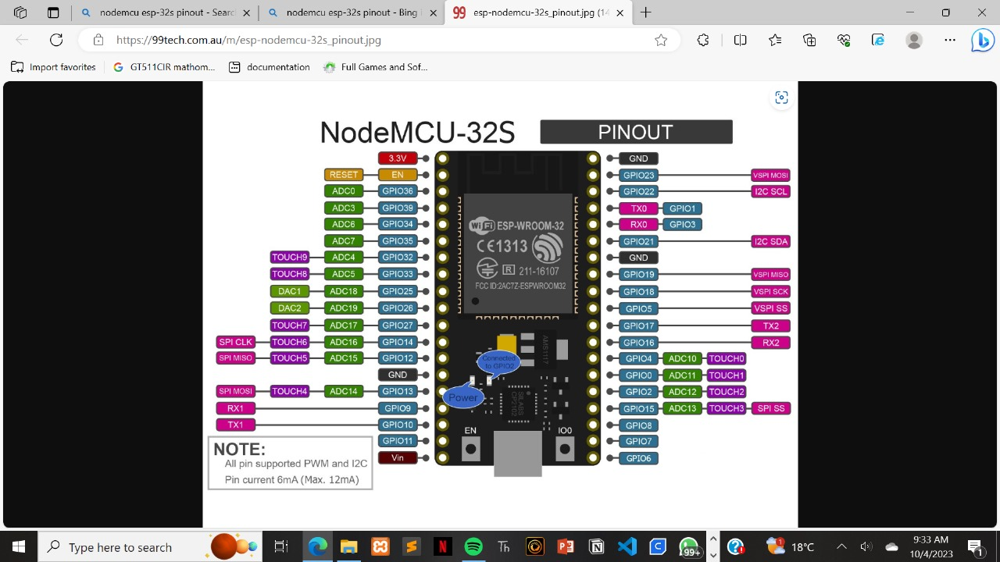

Arduino IDE is an intergrated development environment for programming Arduino boards.
Its a powerful micro-controller module and versatile tool that makes it easy to create and program interactive electronic projects.
ESP32 is a highly capable microcontroller with a wide range of features and capabilities such as dual cores,low power consumption
and compatibility with development frameworks which makes it a preffered choice for IoT applications.
The ESP32 is programmed using the Arduino IDE which involves installing the IDE, adding support for the ESP32 board, selecting the appropriate board variant,
connecting the ESP32 to your computer, writing a code in the Arduino IDE
and uploading it to the board.
An ESP32 NodeMCU32S PINOUT
Traffic lights LED based project with ESP32
 >
>